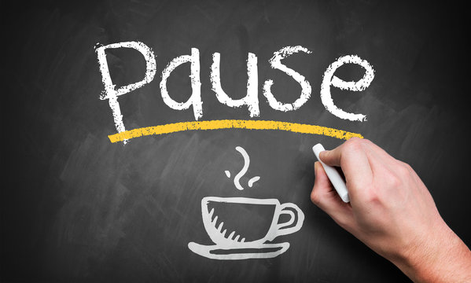

Wir verwenden Cookies um unsere Webseite zu verbessern, personalisierte Inhalte anzuzeigen und Ihnen ein großartiges Webseiten-Erlebnis zu bieten.
Stressed out?
-Das war Vergangenheit-
Zu aller erst musst du wissen: Du bist nicht alleine.
Studium ist für alle eine aufregende Zeit, voller neuer Erfahrungen und Möglichkeiten.
Schnell kann es passieren, dass wir durch die vielen Herausforderungen vom Stress
umzingelt werden. Vor lauter Schwindel und Durcheinander sehen wir keinen Ausweg mehr.
Es stimmt zwar, dass es nicht immer easy ist da rauszukommen. Trotzdem liefern wir dir die
besten Tipps wie du Stress entkommen kannst und ihn erfolgreich bewältigst.
Hier die besten Tipps von Studis für Studis:
1. Beherrsche die Zeit, bevor sie dich beherrscht
Gutes Zeitmanagement ist der Schlüssel zur Stressreduzierung. Wenn du die Zeit nicht im Griff hast, gerät dein ganzes Leben ins Schwanken. Kontrolliere deine Zeit, indem du möglich frühzeitig mit einer guten Planung beginnst. Benutze dazu Kalender, To-Do-Lists oder ähnliche Methoden um dir einen guten Überblick über deinen Zeitplan zu schaffen. Wenn du deinen Überblick behältst, hast du auch einen Durchblick.
2. Step by step
Verschiebe nichts auf morgen was du heute erledigen kannst. Jedes Mal, wenn du was nach hinten verschiebst, sammeln sich die ganzen Dinge auf einem Aufgabenberg. Ganz schnell kann dieser dich umrempeln und zack ist dein Gleichgewicht weg. Um das zu vermeiden gehe immer step by step vor, so bist du stabil unterwegs.
3. Das Wichtigste zuerst
Setze dir Prioritäten im Studium. Was sind die wichtigsten Aufgaben? Was hat die meisten Auswirkungen auf deine Noten und dein Studium? Erledige die wichtigsten Sachen zuerst, so nutzt du deine Konzentration und deine Energie sinnvoll aus.
4. Take a break.

Gönn dir eine Pause. Nur so kannst du einen Ausweg aus dem Stresswirbel finden oder gar nicht erst reingeraten. Entspann dich, treffe dich mit Freunden und Familie, lies ein gutes Buch oder chill auch einfach mal nur auf der Couch. Es ist nie zu wenig Zeit, die wir haben. Es ist zu viel Zeit, die wir falsch nutzen.
Zum Schluss ist noch wichtig zu wissen: Stress ist nicht immer Negativ.
Stress ist ein normaler Bestandteil unseres Lebens. Er hilft uns Herausforderungen zu meistern und leistungsfähiger zu werden. Achte darauf, dass du nicht zu viel Stress hast. Du brauchst einen Wechsel von Anspannung und Entspannung, von Aktion und Ruhe. Wenn du nur eins von beiden hast, wird alles etwas schräg. Genau dann neigst du dazu in Stress zu fallen, weil du deine Balance verloren hast.
Achte also darauf, dass du deinen Stress immer gut ausbalancierst: